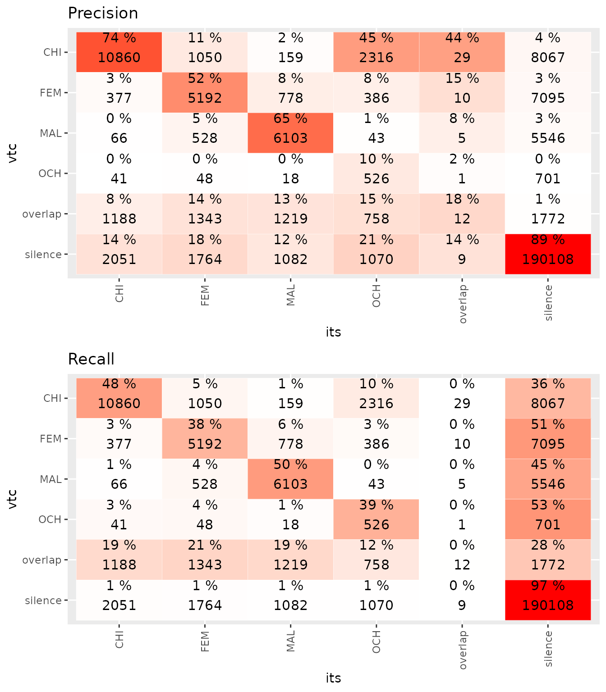
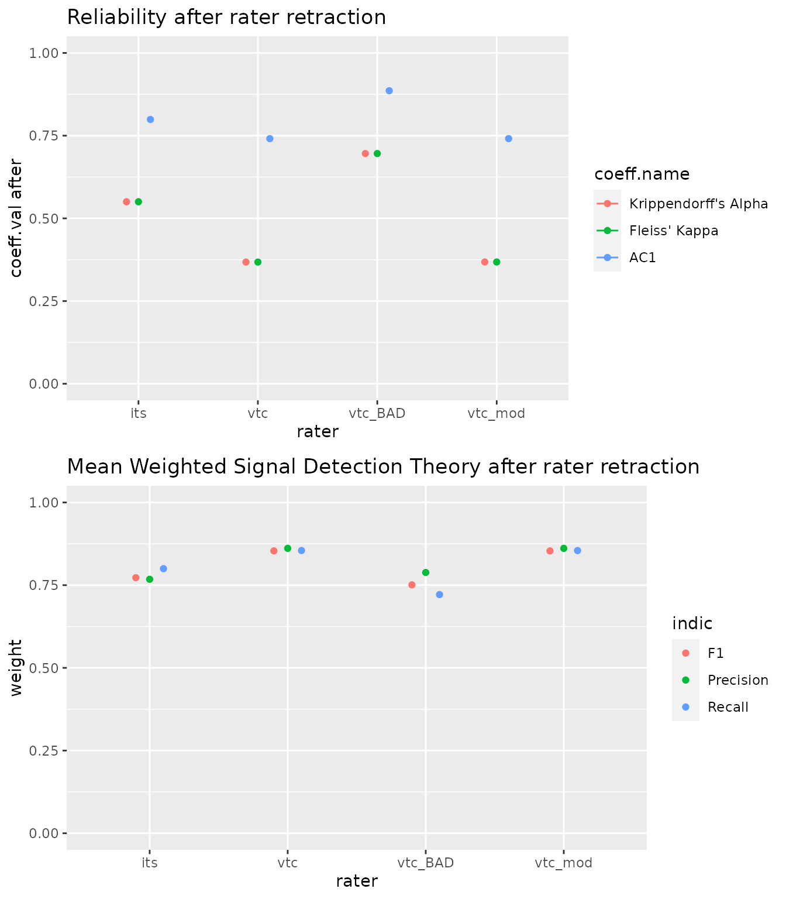

The ChildRecordsR package is an R package dedicated to the analysis of annotations of daylong recordings in ChildRecordsData format. The objective of our package is to provide data aggregation functions and to analyze the reliability of annotations and annotators.
Here you will create a class by specifying the root folder of your corpus, which needs to be formatted using ChildRecordingData specifications. By using a class, we standardize all the references to the information in your corpus. Additionally, we provide basic checks such as missing files or unreferenced files in the meta data. Try to add, misplace or erase some files to see how these checks work.
library(ChildRecordsR)
ChildRecordingsPath = "/mnt/94707AA4707A8CAC/CNRS/corpus/vandam-daylong-demo"
CR = ChildRecordings(ChildRecordingsPath)
#> ###############################################
#> Hello Wellcome to the ChildRecordings R Project
#>
#> Your ChildRecording project path contained :
#> 8 annotations files
#> 1 are referenced in the metadata
#> 2 coders were found : its vtc
#>
#> 4 file(s) seem(s) to be unreferenced in the metadata
#> more infos in ChildRecordings$integrity_test$files.unreferencedAll functions are based on the class (i.e., CR in our example above) to avoid problems of reference, since the class is always set up in the same way.
For the purpose of the tutorial we will need more annotation than provided initially. The next function will help us to add some dummy annotations with distortion in the rating. The first dummy annotation will be a slightly modification and the second one will have important modification.
New.annotations(row.meta = CR$all.meta[2,], time.sd = 10, change.cat.prob = 0.001, new.name = "vtc_mod", CR)
New.annotations(row.meta = CR$all.meta[2,], time.sd = 1500, change.cat.prob = 0.10, new.name = "vtc_BAD", CR)Before it can provide any statistical reliability, the current package will need to find annotation segments that have been annotated by at least two annotators. The annotators could be humans or algorithms – the package does not know the difference, so you need to think about implications. This search is performed by the find.rating.segment function, which returns a data frame with the wav filenames, the annotators’ codenames, the annotation filenames and the onset and offset of the annotated segment(s) with respect to the wav.
At a minimum, you need to provide to the search function the class (i.e., CR in our example above) and the relative path to one or several wav files. The function will then find every segment annotated by any annotators in the wav files. In the following example, we provide the path to a single wav file (to speed things up, see section Analyze a corpus in the ChildRecordsR vignette for an example with multiple files):
record.file <- CR$all.meta$recording_filename[1]
find.rating.segment(CR,record.file)
#> recording_filename set annotation_filename true_onset true_offset
#> 1 BN32_010007.mp3 its BN32_010007_0_0.csv 0 50464000
#> 2 BN32_010007.mp3 vtc BN32_010007_0_0.csv 0 50464000
#> 3 BN32_010007.mp3 vtc_mod BN32_010007_0_0.csv 0 50464000
#> 4 BN32_010007.mp3 vtc_BAD BN32_010007_0_0.csv 0 50464000Alternatively, if a specific time window is provided, the search function will find all the annotations that overlap with the time window provided.
find.rating.segment(CR,record.file,range_from = 27180000, range_to = 27240000)
#> recording_filename set annotation_filename true_onset true_offset
#> 1 BN32_010007.mp3 its BN32_010007_0_0.csv 27180000 27240000
#> 2 BN32_010007.mp3 vtc BN32_010007_0_0.csv 27180000 27240000
#> 3 BN32_010007.mp3 vtc_mod BN32_010007_0_0.csv 27180000 27240000
#> 4 BN32_010007.mp3 vtc_BAD BN32_010007_0_0.csv 27180000 27240000
find.rating.segment(CR,record.file,range_from = 27000000, range_to = 50464000)
#> recording_filename set annotation_filename true_onset true_offset
#> 1 BN32_010007.mp3 its BN32_010007_0_0.csv 2.7e+07 50464000
#> 2 BN32_010007.mp3 vtc BN32_010007_0_0.csv 2.7e+07 50464000
#> 3 BN32_010007.mp3 vtc_mod BN32_010007_0_0.csv 2.7e+07 50464000
#> 4 BN32_010007.mp3 vtc_BAD BN32_010007_0_0.csv 2.7e+07 50464000
find.rating.segment(CR,record.file,range_from = 0, range_to = 27260000)
#> recording_filename set annotation_filename true_onset true_offset
#> 1 BN32_010007.mp3 its BN32_010007_0_0.csv 0 27260000
#> 2 BN32_010007.mp3 vtc BN32_010007_0_0.csv 0 27260000
#> 3 BN32_010007.mp3 vtc_mod BN32_010007_0_0.csv 0 27260000
#> 4 BN32_010007.mp3 vtc_BAD BN32_010007_0_0.csv 0 27260000It is also possible to find annotations for a specific set of annotators, by providing the list of their codenames:
raters <- c("its","vtc","vtc_mod","vtc_BAD")
find.rating.segment(CR,record.file,raters)
#> recording_filename set annotation_filename true_onset true_offset
#> 1 BN32_010007.mp3 its BN32_010007_0_0.csv 0 50464000
#> 2 BN32_010007.mp3 vtc BN32_010007_0_0.csv 0 50464000
#> 3 BN32_010007.mp3 vtc_mod BN32_010007_0_0.csv 0 50464000
#> 4 BN32_010007.mp3 vtc_BAD BN32_010007_0_0.csv 0 50464000Time window and limited annotator can also be specified jointly:
search1 <- find.rating.segment(CR,record.file, raters, range_from = 12616000, range_to = 12616000*3)
search1
#> recording_filename set annotation_filename true_onset true_offset
#> 1 BN32_010007.mp3 its BN32_010007_0_0.csv 12616000 37848000
#> 2 BN32_010007.mp3 vtc BN32_010007_0_0.csv 12616000 37848000
#> 3 BN32_010007.mp3 vtc_mod BN32_010007_0_0.csv 12616000 37848000
#> 4 BN32_010007.mp3 vtc_BAD BN32_010007_0_0.csv 12616000 37848000Once you have obtained information on a set of annotations with the search function and stored it in an object (search1 above), you can use the aggregate function. This function will create a table with the annotation information, and additionally convert your data into a long format, where annotations are split up into temporal bins. For instance, imagine that an annotator said FEM spoke between .5s and 1s of the wav file. This would be one row in the table format. To convert this to long format, a bin size (in milliseconds) can be provided using the cut argument. For instance, if you specify cut = 10, then that 500 millisecond vocalization by FEM becomes 50 rows, each representing 10 milliseconds of speech. By default cut is set to 100 milliseconds. The function will return a raterData class with the original format and a long format for every annotator.
rating1 = aggregate.rating(search1, CR, cut = 100)
#> |================== | 25% time by step : 13s estimate duration : 1m remain : 1m
#> |===================================== | 50% time by step : 20s estimate duration : 1m remain : 1m
#> |======================================================== | 75% time by step : 21s estimate duration : 1m remain : 0m
#> |==========================================================================|100% time by step : 21s estimate duration : 1m remain : 0m
#> number of annotators 4
#> length of recording annotation for each annotator 25232000 ms or 7.008889 hoursNext, an analysis function can be called. We provide several. They all assume you have at least two annotators. It could be two automated algorithms, two humans, or one automated and one human – this package does not treat these cases differently, so you should interpret results carefully.
The reliability or get.reliability function provides alpha, kappa and AC1 for the whole pool of annotators in your search (so this works even if you have 10 annotators). Reliability will be computed for every speaker category and a composite of all of them.
rez1 = get.reliability(rating1)
#> Reliability indicator by type
#>
#> # CHI
#>
#> coeff.name pa pe coeff.val coeff.se conf.int
#> 1 Krippendorff's Alpha 0.9101714 0.81887575 0.50405 0.00175 (0.501,0.507)
#> 2 Fleiss' Kappa 0.9101713 0.81887575 0.50405 0.00175 (0.501,0.507)
#> 3 AC1 0.9101713 0.04528106 0.90591 0.00044 (0.905,0.907)
#> p.value w.name
#> 1 0 unweighted
#> 2 0 unweighted
#> 3 0 unweighted
#>
#>
#> # OCH
#>
#> coeff.name pa pe coeff.val coeff.se conf.int
#> 1 Krippendorff's Alpha 0.9749037 0.96331878 0.31583 0.00430 (0.307,0.324)
#> 2 Fleiss' Kappa 0.9749037 0.96331878 0.31583 0.00430 (0.307,0.324)
#> 3 AC1 0.9749037 0.01222707 0.97459 0.00023 (0.974,0.975)
#> p.value w.name
#> 1 0 unweighted
#> 2 0 unweighted
#> 3 0 unweighted
#>
#>
#> # FEM
#>
#> coeff.name pa pe coeff.val coeff.se conf.int
#> 1 Krippendorff's Alpha 0.9229058 0.8652709 0.42778 0.00201 (0.424,0.432)
#> 2 Fleiss' Kappa 0.9229057 0.8652709 0.42778 0.00201 (0.424,0.432)
#> 3 AC1 0.9229057 0.0449097 0.91928 0.00041 (0.918,0.92)
#> p.value w.name
#> 1 0 unweighted
#> 2 0 unweighted
#> 3 0 unweighted
#>
#>
#> # MAL
#>
#> coeff.name pa pe coeff.val coeff.se conf.int
#> 1 Krippendorff's Alpha 0.9497889 0.89089395 0.53980 0.00235 (0.535,0.544)
#> 2 Fleiss' Kappa 0.9497888 0.89089395 0.53979 0.00235 (0.535,0.544)
#> 3 AC1 0.9497888 0.03636868 0.94789 0.00033 (0.947,0.949)
#> p.value w.name
#> 1 0 unweighted
#> 2 0 unweighted
#> 3 0 unweighted
#>
#>
#> # composit
#>
#> coeff.name pa pe coeff.val coeff.se conf.int
#> 1 Krippendorff's Alpha 0.8076566 0.62046806 0.49321 0.00105 (0.491,0.495)
#> 2 Fleiss' Kappa 0.8076564 0.62046806 0.49321 0.00105 (0.491,0.495)
#> 3 AC1 0.8076564 0.07590639 0.79186 0.00064 (0.791,0.793)
#> p.value w.name
#> 1 0 unweighted
#> 2 0 unweighted
#> 3 0 unweightedAnother possible way to investigate annotators is through classification indicators, such as precision, recall, and F-score. These can only be calculated for cases with exactly two annotators. The first annotator will be assumed as the “gold” annotator, so if you have a human and an automated annotator, or someone with more versus less experience, make sure you order them so that the more reliable annotator (more likely to be “gold”) is provided first.
ratercomp <- c("vtc","its")
get.classification(rating1,ratercomp)
#> Confusion matrix :
#>
#> its
#> vtc CHI FEM MAL OCH overlap silence
#> CHI 10860 1050 159 2316 29 8067
#> FEM 377 5192 778 386 10 7095
#> MAL 66 528 6103 43 5 5546
#> OCH 41 48 18 526 1 701
#> overlap 1188 1343 1219 758 12 1772
#> silence 2051 1764 1082 1070 9 190108
#>
#>
#> STD by class :
#>
#> Class: CHI Class: FEM Class: MAL Class: OCH
#> Sensitivity 0.74470274 0.52312343 0.65209958 0.103157482
#> Specificity 0.95111846 0.96433109 0.97453100 0.996727638
#> Pos Pred Value 0.48307460 0.37519873 0.49654219 0.394007491
#> Neg Pred Value 0.98380178 0.98015372 0.98643503 0.981779860
#> Precision 0.48307460 0.37519873 0.49654219 0.394007491
#> Recall 0.74470274 0.52312343 0.65209958 0.103157482
#> F1 0.58601338 0.43698186 0.56378753 0.163506372
#> Prevalence 0.05779543 0.03933482 0.03709164 0.020208385
#> Detection Rate 0.04304041 0.02057696 0.02418744 0.002084646
#> Detection Prevalence 0.08909683 0.05484284 0.04871176 0.005290879
#> Balanced Accuracy 0.84791060 0.74372726 0.81331529 0.549942560
#> Class: overlap Class: silence
#> Sensitivity 1.818182e-01 0.8913165
#> Specificity 9.751046e-01 0.8468949
#> Pos Pred Value 1.907184e-03 0.9695233
#> Neg Pred Value 9.997805e-01 0.5877981
#> Precision 1.907184e-03 0.9695233
#> Recall 1.818182e-01 0.8913165
#> F1 3.774772e-03 0.9287764
#> Prevalence 2.615716e-04 0.8453082
#> Detection Rate 4.755847e-05 0.7534371
#> Detection Prevalence 2.493649e-02 0.7771212
#> Balanced Accuracy 5.784614e-01 0.8691057
#>
#>
#> STD macro indicators :
#>
#> type unweight weight
#> 1 Recall 0.5160363 0.8433741
#> 2 Precision 0.4533756 0.8886041
#> 3 F1 0.4471401 0.8603768
Finally, the raterComparaison function allows you to compare the impact of annotators on reliability indicators. This is useful if you have multiple human annotators and you want to check whether one of them is doing something different, or if you want to check whether your automated annotator stands out in your pool of annotators. You can only use this function when you have more than 2 annotators. The impact of a given annotator is calculated by removing that annotator from the pool of annotators, and observing the increase or decrease in the overall reliability. If the reliability indicators increase after the deletion of a specific annotator, then that annotator should be considered as having a negative impact on the annotations. In our next example, vtc_BAD has a negative impact on reliability.
comparaison = compare.rating(rating1)
#> number of annotators 4
#> length of reccording annotation 100928000 seconds or 28035.56 hours
#> Record span 25232000 seconds or 7008.889 hours
#>
#> ### Annotator its ###
#>
#> coeff.val before conf.int before coeff.val after
#> Krippendorff's Alpha 0.493 (0.491,0.495) 0.550
#> Fleiss' Kappa 0.493 (0.491,0.495) 0.550
#> AC1 0.792 (0.791,0.793) 0.799
#> conf.int after coeff.difference
#> Krippendorff's Alpha (0.548,0.552) -0.057
#> Fleiss' Kappa (0.548,0.552) -0.057
#> AC1 (0.798,0.8) -0.007
#>
#> unweight weight
#> Recall 0.397 0.800
#> Precision 0.459 0.768
#> F1 0.392 0.773
#>
#> ### Annotator vtc ###
#>
#> coeff.val before conf.int before coeff.val after
#> Krippendorff's Alpha 0.493 (0.491,0.495) 0.368
#> Fleiss' Kappa 0.493 (0.491,0.495) 0.368
#> AC1 0.792 (0.791,0.793) 0.741
#> conf.int after coeff.difference
#> Krippendorff's Alpha (0.365,0.37) 0.125
#> Fleiss' Kappa (0.365,0.37) 0.125
#> AC1 (0.74,0.743) 0.051
#>
#> unweight weight
#> Recall 0.621 0.855
#> Precision 0.619 0.861
#> F1 0.601 0.854
#>
#> ### Annotator vtc_BAD ###
#>
#> coeff.val before conf.int before coeff.val after
#> Krippendorff's Alpha 0.493 (0.491,0.495) 0.696
#> Fleiss' Kappa 0.493 (0.491,0.495) 0.696
#> AC1 0.792 (0.791,0.793) 0.886
#> conf.int after coeff.difference
#> Krippendorff's Alpha (0.694,0.698) -0.203
#> Fleiss' Kappa (0.694,0.698) -0.203
#> AC1 (0.885,0.887) -0.094
#>
#> unweight weight
#> Recall 0.395 0.721
#> Precision 0.337 0.788
#> F1 0.343 0.751
#>
#> ### Annotator vtc_mod ###
#>
#> coeff.val before conf.int before coeff.val after
#> Krippendorff's Alpha 0.493 (0.491,0.495) 0.368
#> Fleiss' Kappa 0.493 (0.491,0.495) 0.368
#> AC1 0.792 (0.791,0.793) 0.741
#> conf.int after coeff.difference
#> Krippendorff's Alpha (0.366,0.37) 0.125
#> Fleiss' Kappa (0.366,0.37) 0.125
#> AC1 (0.74,0.743) 0.051
#>
#> unweight weight
#> Recall 0.621 0.855
#> Precision 0.619 0.861
#> F1 0.601 0.854
plot(comparaison)